Clean up the left nav, make space for chat
Thirteen static nav rows become ten. Search, Dashboard, Inbox and Workspaces each move somewhere that already suits them, and the row they free up goes to Chat — the one surface people reach for constantly that has no entry point at all today. Nothing is deleted and no URL breaks; four destinations simply stop paying rent in the nav.
Where every left-nav item goes
Before on the left, after on the right, destinations in the middle. Red dashed marks are annotation, not UI.
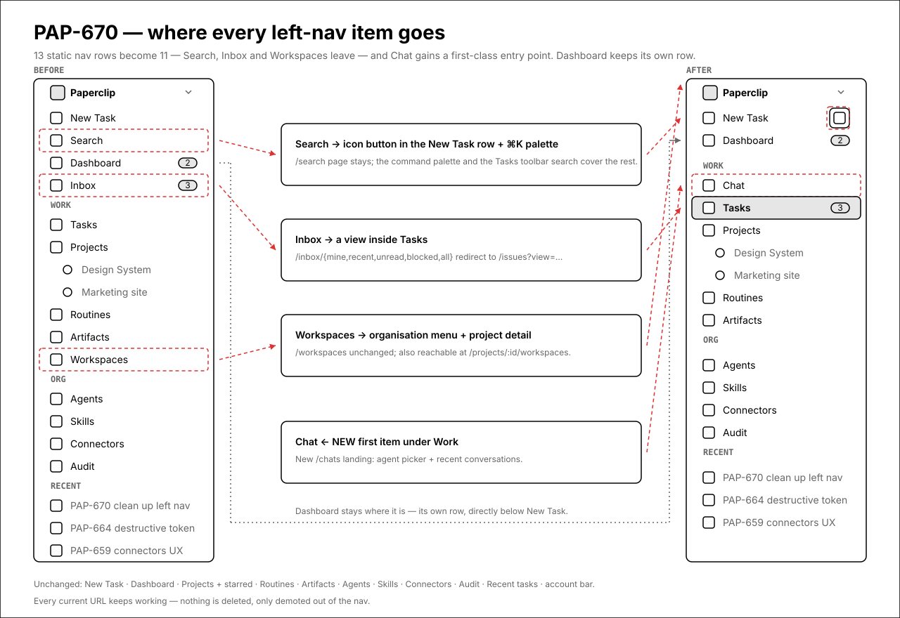
1.The left nav, after
Ten static rows instead of thirteen, and the one thing that had no entry point — chat — gets the first slot under Work. Nothing is deleted: Search, Dashboard, Inbox and Workspaces all keep their pages and their URLs, they just stop spending a permanent row.
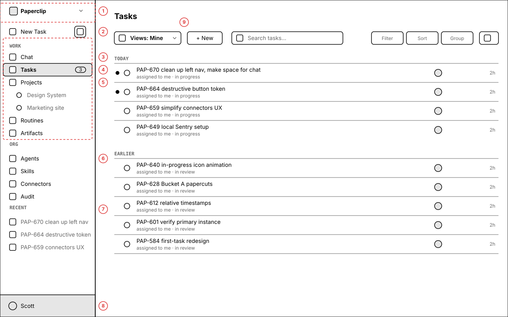
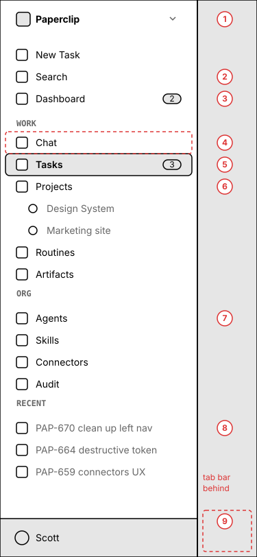
Annotations
- 1 — Organisation switcher — unchanged as a switcher. It also becomes the home for Dashboard and Workspaces (screen 6).
- 2 — The New Task row keeps its full width; a search icon button sits at its right edge. ⌘K still opens the command palette, and /search is unchanged. In the collapsed rail this becomes its own icon row directly under New Task.
- 3 — Chat — new, first item under Work. Opens a /chats landing (screen 5). Hidden entirely while enableAgentChat is off, the same no-flash pattern the other flagged rows already use.
- 4 — Tasks — now the only task surface. It carries the badge that used to sit on Inbox: unread count, danger tone when a heartbeat run has failed.
- 5 — Projects and its starred children — unchanged.
- 6 — Org group (Agents, Skills, Connectors, Audit) — unchanged. Audit stays put; only Dashboard and Workspaces leave the nav.
- 7 — Recent tasks — unchanged.
- 8 — Account bar — unchanged.
- 9 — The Views control in the content area is the single entry point to every list the old nav split across two separate rows.
On mobile
On mobile the same rows render inside the drawer. Behind the scrim, the bottom tab bar swaps Inbox for Chat — Home · Tasks · + · Chat · Agents — because Inbox no longer exists as a destination.
2.Tasks, default view “Mine”
Inbox stops being a page and becomes a view. Everything that made the inbox an inbox — unread dots, mark-all-read, swipe/hover archive, date grouping — comes across with it.
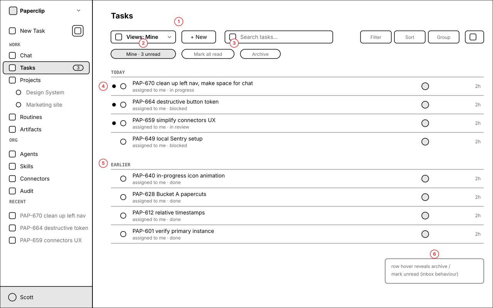
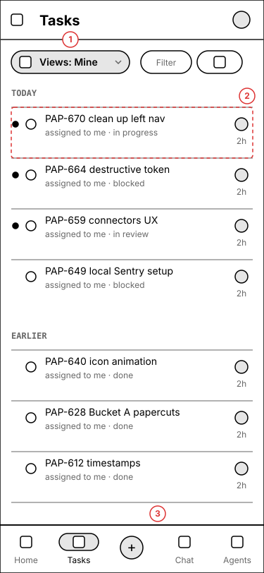
Annotations
- 1 — The Views control replaces both the Inbox tab bar and the implicit “all tasks” default that /issues has today.
- 2 — The active view reads back as a chip with its live count, so you can see you are in a filtered view without opening the menu.
- 3 — Mark all read and Archive appear only while a My Work view is active; they are meaningless in “All tasks”.
- 4 — Unread dots, hover archive and mark-unread — all preserved. These are the behaviours that make it an inbox rather than a list.
- 5 — Date-group separators already exist on both surfaces today; after the merge there is one implementation.
- 6 — Row hover reveals the inbox actions, exactly as it does on /inbox/mine now.
On mobile
The toolbar collapses to a pill row (Views · Filter · overflow) and Views opens as a bottom sheet rather than a dropdown. Rows go to two lines plus a meta line.
3.Every current view, in one menu
This is the answer to “how does a user get to all the views they have today”. Nothing is dropped; each one becomes a named view.
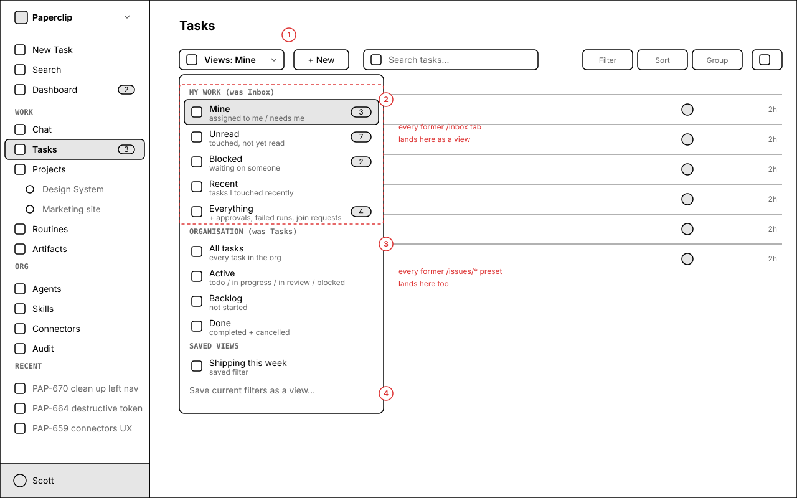
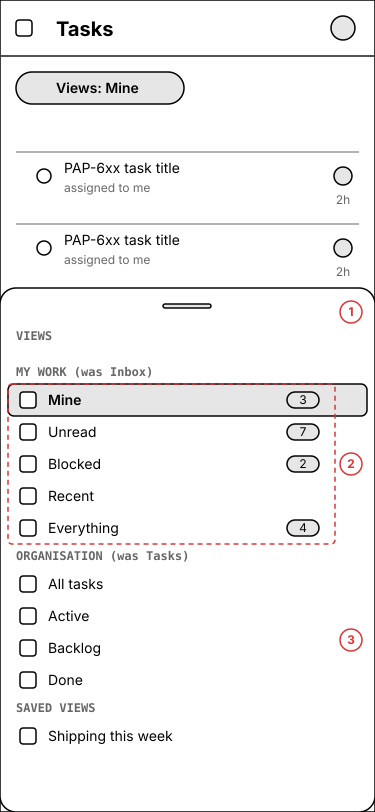
Annotations
- 1 — The Views trigger, showing the active view.
- 2 — MY WORK — the five former /inbox tabs, unchanged in meaning: Mine, Unread, Blocked, Recent, Everything.
- 3 — ORGANISATION — the former /issues presets: All tasks, Active, Backlog, Done. These are already redirects to /issues today, so they cost nothing to reinstate as views.
- 4 — Saved views — new. Any filter set you build can be named and pinned here, which is what stops the menu from needing to grow again.
On mobile
The menu becomes a bottom sheet with the same three groups and the same order.
4.“Everything” has to carry non-task rows
The inbox is not only tasks. /inbox/all mixes in approvals, failed heartbeat runs, join requests and alerts, each with its own row component and its own actions. This is the part of the merge that is real work rather than routing.
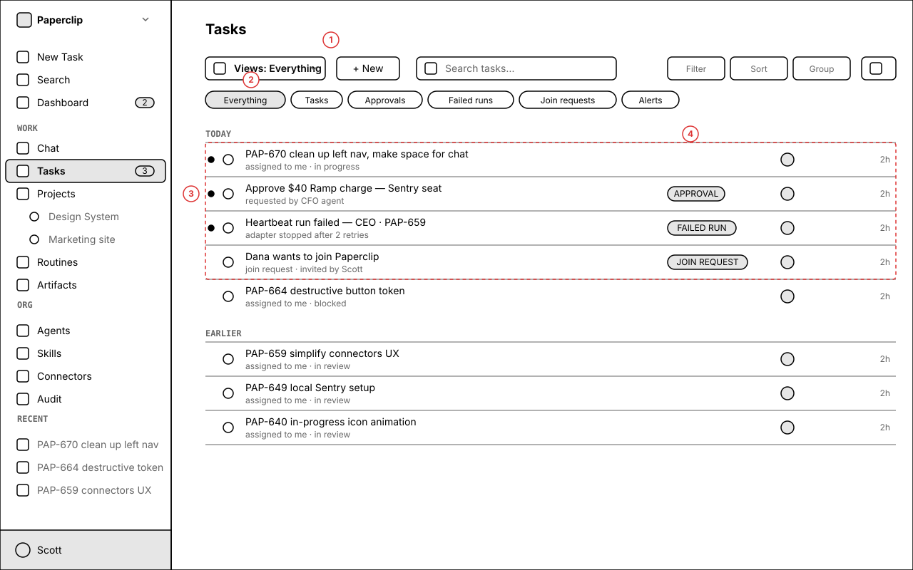
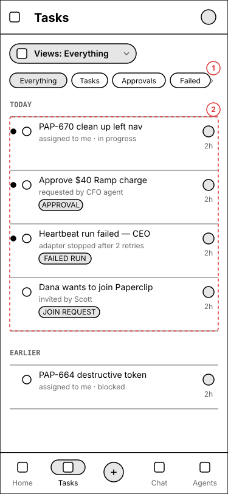
Annotations
- 1 — Everything is the former /inbox/all.
- 2 — The category chips are the existing allCategoryFilter values: everything · tasks · approvals · failed runs · join requests · alerts.
- 3 — Non-task rows keep their own components and actions. An approval is approved, a failed run is retried, a join request is admitted — none of those are task operations, and rendering them as task rows would be a regression.
- 4 — So the combined list needs a row renderer that switches on item kind. IssuesList is task-only today; this is the one place the plan adds a genuinely new capability rather than moving code.
On mobile
Chips scroll horizontally; the kind tag moves under the title so the row stays two-thumb readable.
5.Chat gets a landing page
Today the only way into a chat is a sidebar section that appears when a flag is on, and there is no /chats index at all — you have to already know an agent's route ref. The new nav item needs somewhere to go.
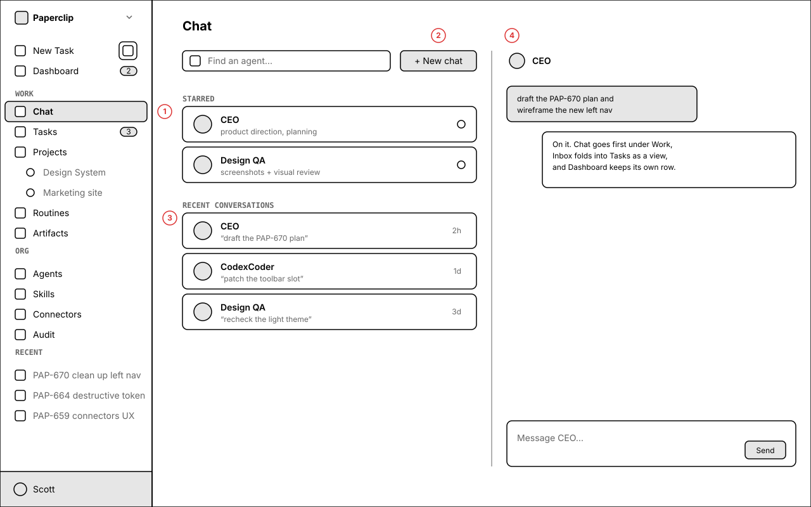
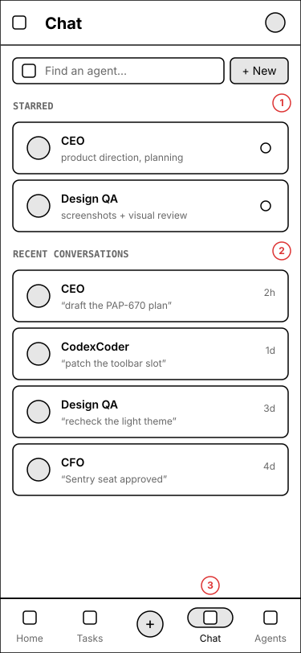
Annotations
- 1 — The Chat nav item is active; the existing starred-agents sidebar section can nest under it exactly as starred projects nest under Projects.
- 2 — New chat opens the existing AgentChatPicker — no new picker.
- 3 — Starred and recent conversations reuse orderChatAgents and useRecentAgentChats, which already back the sidebar section.
- 4 — Selecting a conversation opens the existing /chats/:agentRef view; on desktop it previews in place.
On mobile
The conversation list is a full screen; selecting a conversation pushes to the chat, with a back affordance in the app bar.
6.The organisation menu absorbs the org-level pages
Dashboard and Workspaces are both “about this organisation” rather than “about my work”. The org switcher is already the organisation-scoped menu, and it has room.
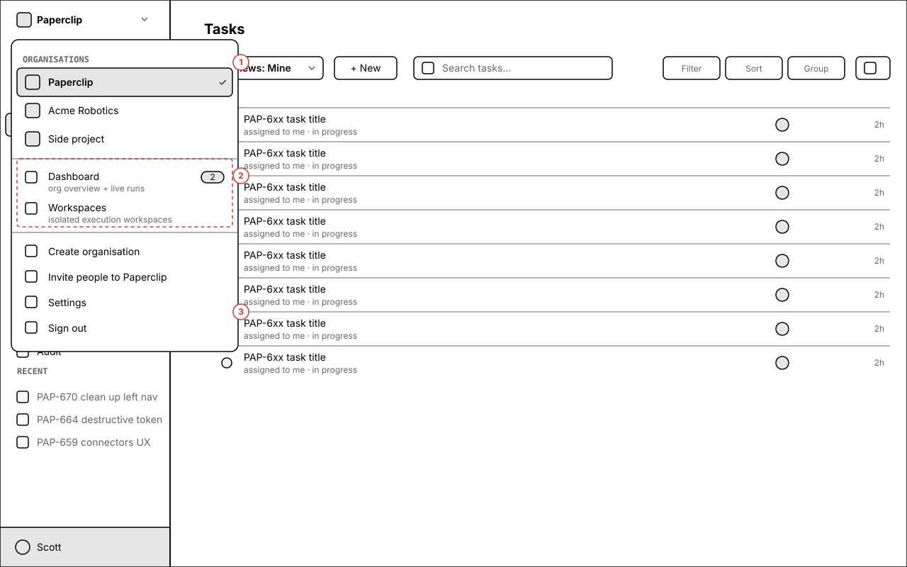
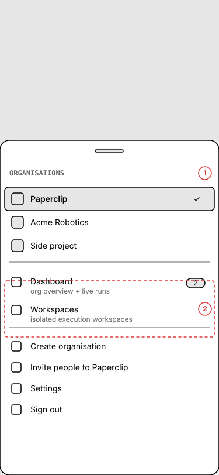
Annotations
- 1 — The existing organisation list, reorder and switch behaviour — unchanged.
- 2 — New block: Dashboard, carrying the live-run count the nav row used to show, and Workspaces. Workspaces stays flag-gated on enableIsolatedWorkspaces and is also still reachable at /projects/:id/workspaces.
- 3 — Create organisation, Invite people, Settings and Sign out — unchanged.
On mobile
The dropdown becomes a bottom sheet; the same two items sit between the org list and the actions.
Four things I need you to settle
Everything above is buildable as drawn. These four would change the drawing.
- 1 — the truncated bullet. The ticket reads “avatar/icon and get rid of it as a”, and then a second bullet repeats “find another place for search”. I read the pair as one idea: search should stop being a nav row and live as an icon. I put that icon at the right edge of the New Task row rather than in the header, because the header's spare width is deliberately reserved for the organisation name (there is a comment in
Sidebar.tsxsaying search was moved out of the header for exactly that reason). If you meant something else — for example moving Settings into the account avatar menu — say so and screen 1 changes. - 2 — what “Tasks” opens by default. I have it opening your last-used view, defaulting to Mine on a fresh profile, because that is the higher-frequency destination. The alternative is to keep
/issuesmeaning “All tasks” forever and make Mine an explicit click. Your call; it is a one-line default. - 3 — does Audit stay in the nav? You did not ask to move it, so I left it. If the goal is a shorter nav it is the next obvious candidate for the organisation menu, alongside Dashboard.
- 4 — the mobile Home tab. The bottom tab bar still has Home pointing at /dashboard. I kept it because the organisation sheet is a cramped way to reach a dashboard on a phone. If you want mobile to match desktop exactly, Home goes and the bar drops to four items.
/inbox/all as its own page reached from the Views menu — every nav row still disappears, and the other nine views still merge.